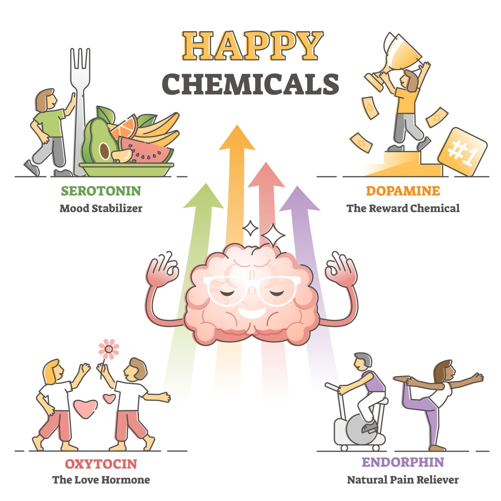
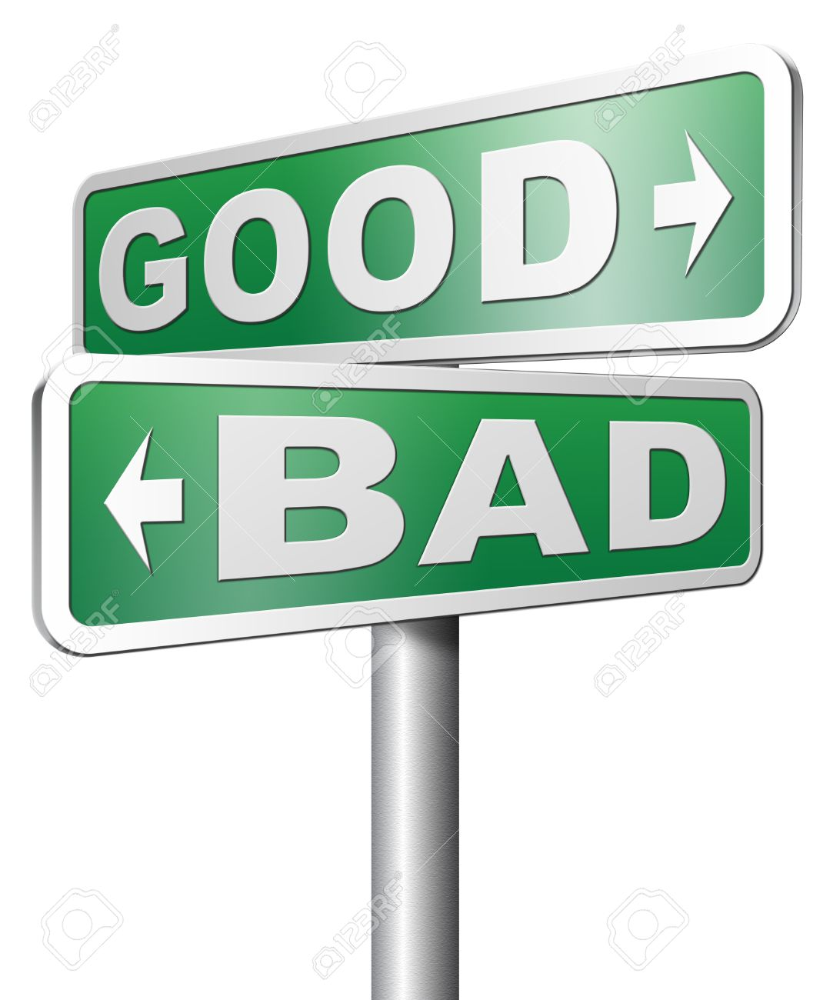

## Intensjon * Viktigheten av målsetting --- ## Bakgrunn * Hvorfor dette temaet? * "Uten mål, ingen positive følelser" * Virkelig???!!! * Folk vil være glad :) --- ## Vanlige feil * Dårlig på målsetting * Vage, lite konkrete * Ytre motivasjon, ikke indre * Verdier * Ikke forstå viktigheten --- ## Motivasjon * Motivert til å undersøke påstand * Ønsket å vite mer / forstå = presentasjon * Undersøke sammenheng: mål og positive følelser --- ## Følelser * Hvorfor følelser? * Øke sjanse for overlevelse og reproduksjon. * Skiller mellom negative og positive følelser --- <!-- <section data-background-image="Figures/tiger.jpg"> --> ## Negative følelser * Tristhet, stress, frykt * Farlige situasjoner * Fight or flight * Snevre inn fokus <!-- </section> --> --- <section data-background-image="Figures/360_F_622180392_aXWEmVjgrqQzKgVESskrZ2snNZxqJ1P3.jpg"> ## Positive følelser * Glede, inspirasjon, håp, takknemlighet * Hvorfor har vi positive følelser? * Motivere bevegelse mot en bedre sted * Ikke bevegelse mot et bedre sted = fravær av positive følelser * Utvide fokus, kreativitet, kunnskap, ferdigheter * Samle ressurser, knytte bånd * Setter oss i bedre posisjon i fremtiden </section> ---
## Motivasjon * Signalstoffer og positive følelser * Dopamin, Motivasjon. * Indre belønningssystemet * Motivere oss til å bevege oss mot et bedre sted. * Forfølge mål * Jeg vil har mer <!-- * Sterk sammenheng mellom motivasjon og mening -->  --- ## Verdier * Positive følelser og bedre sted, hvor? * Representerer hva en person synes er viktig i livet. * opp/ned * Ingen verdier = ingen sted å bevege deg mot * Motiverende mål og verdier  --- ## Mål * Et ønsket utfall som ikke ellers ville hendt uten at du gjør noe * Motstand * hvorfor gjøre vanskelige ting? <img src="Figures/1578751600982.png" width="800" height="Auto"> --- ## Mål * Gjøre vanskelige ting = forfølge mål * Følger verdier * Bedre sted for deg. * Frigir dopamin => driv, mening, motivasjon, glede * Forfølge mål = Mening --- * Hvorfor ha et mål? Enkelt, ingen mål, ingen positive følelser ---